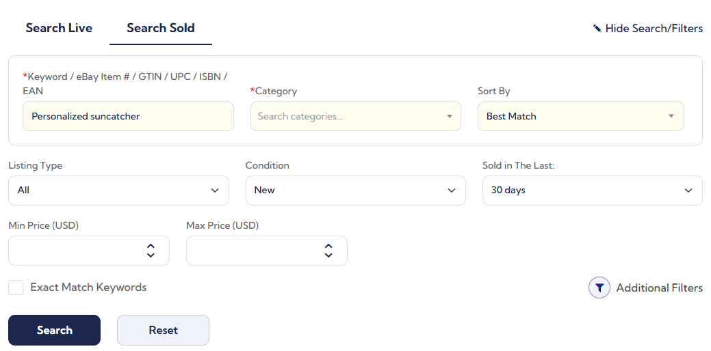
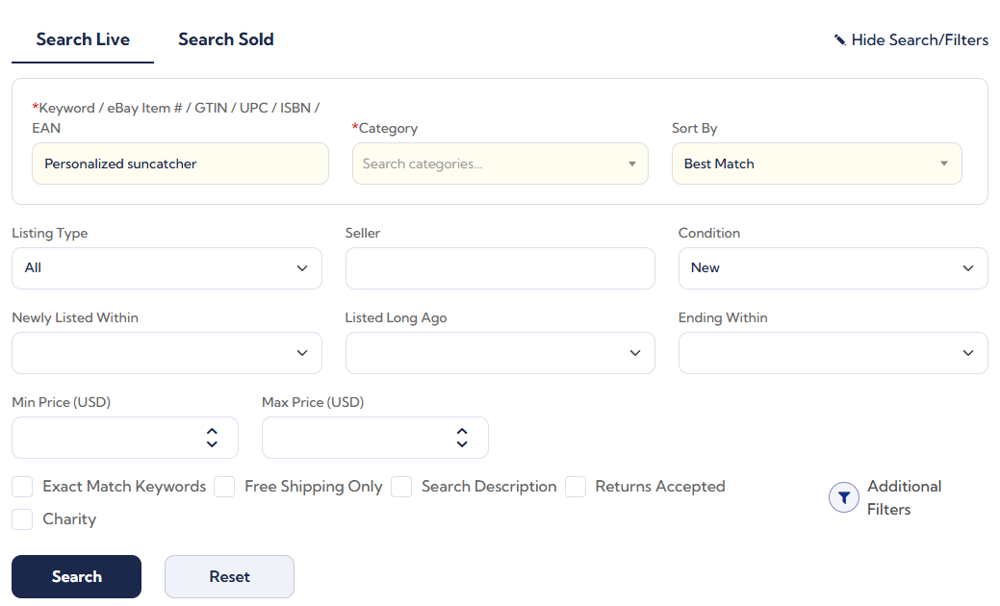
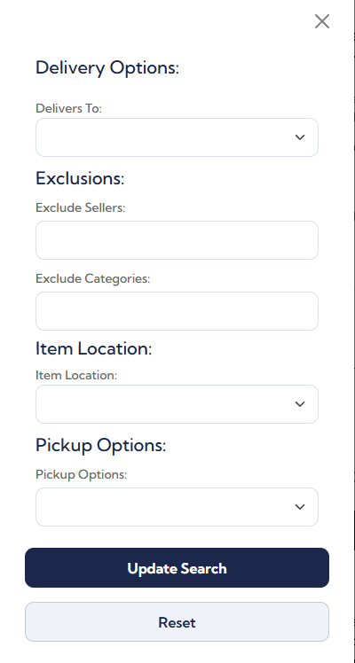
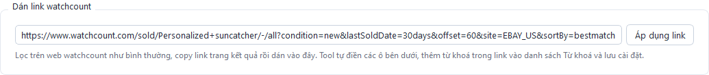
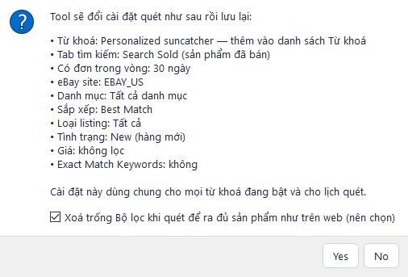
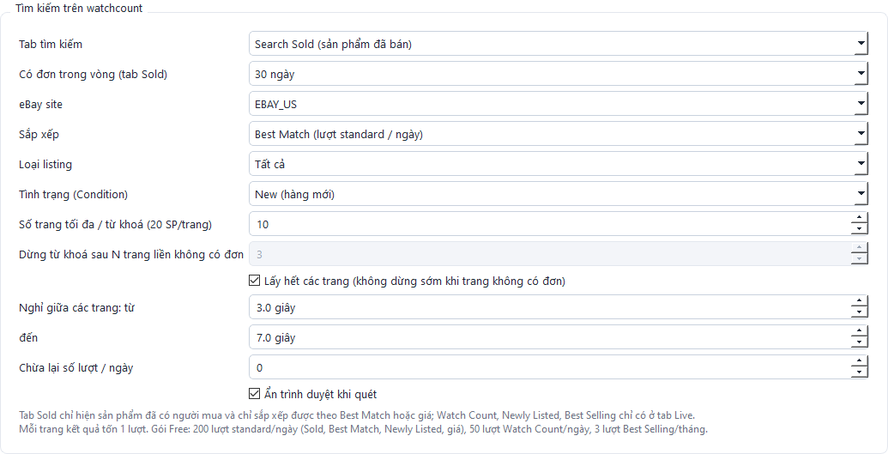
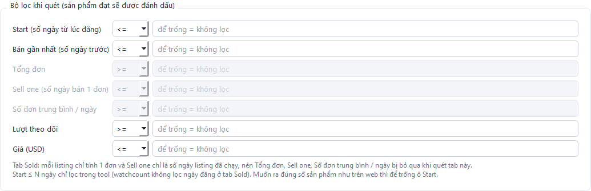
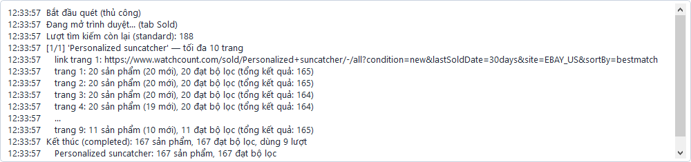

Tool tự động tìm sản phẩm eBay bán chạy trên watchcount.com theo danh sách từ khoá của bạn, lọc theo ngày đăng, số đơn, tốc độ bán, rồi hiển thị dạng thẻ (card) có tiêu đề, hình ảnh và xuất ra Excel. Tool có thể tự quét theo lịch, kể cả khi bạn không ngồi trước máy.
Bắt đầu nhanh trong 5 bước
|
Thanh bên trái là các mục của app. Bấm vào từng mục để chuyển trang:
Tài khoản Free của watchcount cho 200 lượt tìm/ngày, còn khi chưa đăng nhập chỉ có 20 lượt/ngày. Nếu chưa có tài khoản, đăng ký miễn phí tại watchcount.com.
Khung Tài khoản sau khi đăng nhập thành công: hiện email, gói và số lượt còn lại.
Có nhiều từ khoá thì dùng Nhập từ file .txt (mỗi dòng một từ khoá). Xuất ra file .txt để sao lưu hoặc chuyển sang máy khác. Chọn một dòng rồi bấm Xoá dòng đang chọn để xoá.

Trang Từ khoá với 4 từ khoá đang bật.
Trên watchcount có hai tab tìm kiếm. Tool dùng Search Sold mặc định.
| Tab | Lấy sản phẩm nào | Khi nào nên dùng |
|---|---|---|
| Search Sold (mặc định) |
Chỉ những listing đã có người mua, kèm ngày bán gần nhất và giá bán gần nhất. | Tìm mẫu đang bán ra đơn thật. Phù hợp nhất để săn bestseller. |
| Search Live | Mọi listing đang bán, kể cả chưa có đơn nào. | Cần sắp xếp theo Watch Count, Newly Listed hoặc Best Selling. |
Các ô trong khung Tìm kiếm trên watchcount (Cài đặt quét):

Khung Tìm kiếm: tab Sold, lấy sản phẩm có đơn trong 7 ngày.
Đổi xong nhớ bấm Lưu cài đặt ở cuối trang. Danh mục, Giá và Exact Match được lọc ngay trên watchcount nên không tốn thêm lượt.
Tool lưu mọi sản phẩm tìm được, và đánh dấu những sản phẩm đạt bộ lọc. Ô nào để trống thì không lọc theo ô đó. Mỗi dòng gồm: chỉ số, phép so sánh (<=, >=, <, >, =) và giá trị.
| Chỉ số | Ý nghĩa | Ví dụ |
|---|---|---|
| Start (số ngày từ lúc đăng) | Listing đăng bao nhiêu ngày trước. | <= 7: bỏ listing đăng quá 7 ngày. |
| Bán gần nhất (số ngày trước) | Đơn gần nhất cách đây bao nhiêu ngày (chỉ tab Sold có). | <= 3: vừa có đơn trong 3 ngày. |
| Tổng đơn | Tổng số đơn đã bán của listing. Chỉ dùng với tab Live. | >= 5 |
| Sell one (số ngày bán 1 đơn) | Trung bình mấy ngày bán được 1 đơn. Càng nhỏ càng bán chạy. Chỉ dùng với tab Live. | <= 7, <= 3 hoặc <= 1 |
| Số đơn trung bình / ngày | Ngược lại với Sell one. Chỉ dùng với tab Live. | >= 1 |
| Lượt theo dõi | Số người đang theo dõi (watch) listing. | >= 10 |
| Giá (USD) | Giá thấp nhất của listing. | <= 30 |

Mặc định: đăng trong 7 ngày và trung bình 7 ngày bán được ít nhất 1 đơn. Ảnh chụp ở tab Sold nên ba ô Tổng đơn, Sell one, Số đơn trung bình / ngày bị làm mờ.
|
Tab Sold khác tab Live: ở tab Sold, mỗi listing là một sản phẩm đã bán hết nên watchcount luôn ghi 1 đơn,
và Sell one chỉ là số ngày listing đã chạy. Vì vậy khi quét tab Sold, tool bỏ qua ba ô Tổng đơn, Sell one,
Số đơn trung bình / ngày (các ô này bị làm mờ trong Cài đặt). Điều kiện Start <= N ở tab Live được gửi thẳng lên watchcount để tiết kiệm lượt. Ở tab Sold watchcount không lọc ngày đăng, nên tool tải mọi sản phẩm có đơn rồi mới lọc Start. Ví dụ "glass suncatcher", có đơn trong 1 ngày: web hiện khoảng 80 sản phẩm, nhưng chỉ khoảng 1/6 số đó là listing đăng trong 7 ngày. Muốn ra đủ như trên web thì để trống ô Start. |
Bạn đã lọc trên web watchcount.com và muốn tool cào đúng danh sách đó (để xuất Excel hoặc quét lại theo lịch)? Có hai cách: dán link (nhanh, lấy được mọi bộ lọc) hoặc chỉnh tay từng ô. Mục này làm mẫu với link:
|
https://www.watchcount.com/sold/Personalized+suncatcher/-/all ?condition=new&lastSoldDate=30days&offset=60&site=EBAY_US&sortBy=bestmatch |
Ở trang kết quả của watchcount, bấm Edit Search (ngay trên danh sách sản phẩm) để mở khung tìm kiếm. Tab Sold có ít ô hơn tab Live:

Khung tìm kiếm tab Sold: Keyword, Category, Sort By, Listing Type, Condition, Sold in The Last, Min/Max Price, Exact Match Keywords.

Tab Live có thêm Seller, Newly Listed Within, Listed Long Ago, Ending Within và các ô tích Free Shipping Only, Search Description, Returns Accepted, Charity.
 |
Nút Additional Filters (biểu tượng phễu) mở thêm một bảng bên phải màn hình:
Danh mục cũng chọn được bằng cách bấm tên danh mục ở cột bên trái trang kết quả. |


Hộp xác nhận khi dán link mẫu.
Bộ lọc nào tool chưa có ô riêng (Seller, Free Shipping Only, Item Location, Exclude Sellers...) vẫn được giữ lại ở dòng Tham số thêm từ link và gửi kèm khi quét. Phần offset trong link (trang đang xem) được bỏ qua vì tool luôn quét từ trang 1.
Mỗi phần của link tương ứng với một ô trong tool:
| Phần trong link | Chỉnh ở đâu trong tool | Chọn gì (link mẫu in đậm) |
|---|---|---|
| /sold/ hoặc /live/ | Cài đặt quét → Tab tìm kiếm | sold → Search Sold; live → Search Live |
| /Personalized+suncatcher/ | Trang Từ khoá | Dấu + là dấu cách: thêm từ khoá Personalized suncatcher |
| /-/ (danh mục) | Danh mục | - → Tất cả danh mục; vd home-garden_11700 → Home & Garden. Danh mục con chỉ chọn được bằng Cách 1. |
| /all (loại listing) | Loại listing | all → Tất cả; fixedprice → Fixed-Price / BIN; auction → Đấu giá; bestoffer → Best Offer |
| condition=new | Tình trạng (Condition) | new → New; used → Used; link không có condition → Tất cả |
| lastSoldDate=30days | Có đơn trong vòng (tab Sold) | 1day → 1 ngày … 30days → 30 ngày … 60days → 60 ngày; link không có → Không giới hạn |
| site=EBAY_US | eBay site | EBAY_US |
| sortBy=bestmatch | Sắp xếp | bestmatch → Best Match; sortBy=price&sortOrder=asc → Giá thấp → cao; sortOrder=desc → Giá cao → thấp |
| minPrice=10, maxPrice=30 | Giá (USD) từ … đến | 10 và 30 |
| exactKeywordMatch=true | Ô tích Exact Match Keywords | Tích |
| startTimeFrom=7days (tab Live) | Bộ lọc Start | Start <= 7 |
| offset=60 | Không cần chỉnh | Chỉ là trang đang xem trên web (mỗi trang 20 sản phẩm, offset=60 là trang 4). Tool luôn quét từ trang 1. |
| seller, freeShippingOnly, itemLocation, excludeSellers… | Không có ô riêng | Dùng Cách 1, tool giữ các tham số này ở dòng Tham số thêm từ link. |
Sau đó chỉnh thêm:

Khung Tìm kiếm đã chỉnh giống link mẫu (Cách 1 cũng cho ra đúng như vậy).
| Bộ lọc khi quét là lý do hay gặp nhất khi tool ra ít hơn web. Web watchcount không lọc theo Start, Bán gần nhất, Lượt theo dõi hay Giá (USD) của tool. Mặc định tool lọc Start <= 7 (chỉ lấy listing đăng trong 7 ngày): với link mẫu, tool tải đủ 167 sản phẩm nhưng chỉ 1 sản phẩm đăng trong 7 ngày, nên trang Kết quả gần như trống. Muốn xem đủ mà vẫn giữ bộ lọc, mở Bảng 1 · Tất cả SP cào về ở trang Kết quả. |

Bộ lọc để trống hết. Ba ô bị làm mờ thì tab Sold không dùng nên không cần quan tâm.

Nhật ký khi quét link mẫu (ngày 05/10/2026).
Vào Kết quả, chọn Từ khoá = Personalized suncatcher. Chọn sắp xếp Bán gần đây nhất để có thứ tự gần giống web (ở tab Sold, Best Match của watchcount xếp theo ngày bán gần nhất). Sản phẩm ở trang offset=60 trên web là khoảng thẻ thứ 61–80. Bấm Xuất Excel để lấy file.
Lưu ý
|
Bấm ▶ Quét ngay ở góc trên bên phải. Thanh trên cùng hiện từ khoá đang quét và tiến độ. Bấm ■ Dừng để dừng giữa chừng, những gì đã quét vẫn được giữ.

Thỉnh thoảng watchcount bắt xác minh chống robot (reCAPTCHA). Khi đó tool tự mở một cửa sổ trình duyệt và hiện thông báo ở góc màn hình. Bạn làm như sau:

Trang xác minh của watchcount, kèm dải hướng dẫn của tool ở đáy.
Lưu ý:
|
Mục Kết quả hiện sản phẩm dạng thẻ, chia làm hai bảng:
Dòng Theo từ khoá ngay trên hai bảng ghi mỗi từ khoá cào về bao nhiêu sản phẩm và bao nhiêu đạt lọc. Thanh phía trên dùng để:

Trang Kết quả với các sản phẩm tìm được từ tab Sold.
 |
Đọc một thẻ sản phẩm
|

| App phải đang chạy thì lịch mới quét. Bấm dấu X để đóng cửa sổ thì app thu xuống khay hệ thống (góc phải thanh taskbar, gần đồng hồ) và vẫn chạy. Muốn thoát hẳn: chuột phải biểu tượng ở khay → Thoát hẳn. Nếu máy tắt đúng giờ quét, app sẽ quét bù một lần khi mở lại trong ngày đó. |
Trong Cài đặt quét → Chung, tích Khởi động cùng Windows để app tự chạy mỗi khi bật máy:

Mục Nhật ký ghi tool đang làm gì (từ khoá nào, trang mấy, bao nhiêu sản phẩm đạt lọc) và danh sách các lần quét trước. Khi gặp lỗi, hãy xem ở đây trước.

Mỗi trang kết quả (20 sản phẩm) tốn 1 lượt. Tool tự chia đều số lượt còn lại cho các từ khoá và dừng khi hết lượt.
| Loại tìm kiếm | Chưa đăng nhập | Tài khoản Free |
|---|---|---|
| Tab Sold, Best Match, theo giá, Newly Listed | 20 / ngày | 200 / ngày |
| Watch Count (tab Live) | 20 / ngày | 50 / ngày |
| Best Selling (tab Live, bắt buộc đăng nhập) | — | 3 / tháng |
Ví dụ: 10 từ khoá × 10 trang = tối đa 100 lượt mỗi lần quét.
Làm theo mục 7. Đây không phải lỗi đăng nhập.
Chỉ gặp khi dùng Best Selling mà chưa đăng nhập, hoặc phiên đăng nhập đã hết hạn. Vào Cài đặt quét → Đăng nhập watchcount.
Kiểm tra kết nối mạng rồi bấm Quét ngay lại. App tải Chromium vào thư mục %LOCALAPPDATA%\ms-playwright.
Làm theo mục 6: dán link watchcount vào Cài đặt quét (Áp dụng link), giữ tích Xoá trống Bộ lọc, tăng Số trang tối đa. Nhớ là ô Start trong Bộ lọc khi quét hay làm ra ít sản phẩm hơn web.
Giảm Số trang tối đa / từ khoá, bớt từ khoá, hoặc đăng nhập để có 200 lượt/ngày. Lượt được reset mỗi ngày.
App tự kiểm tra mỗi lần mở. Khi có bản mới, bấm Yes để tải và cài; app tự đóng rồi mở lại. Có thể kiểm tra thủ công ở Cài đặt quét → Phiên bản & cập nhật. Từ khoá, kết quả, cài đặt và phiên đăng nhập được giữ nguyên khi cập nhật.